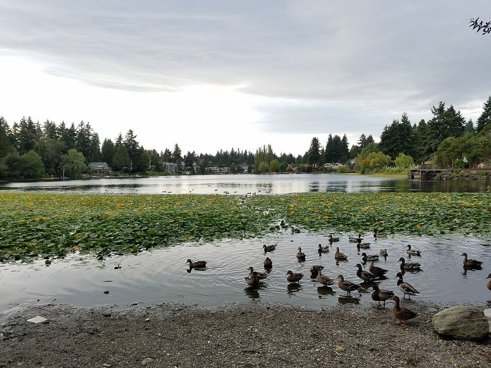

Living in Bitter Lake

Bitter Lake is a neighborhood in Seattle, Washington, United States, named after its most notable feature, Bitter Lake. It was a mostly natural forest of Douglas-fir and Western Redcedar, inhabited by Native Americans, until the late 19th century. Development especially picked up when the Seattle-to-Everett Interurban streetcar reached the lake in 1906. A sawmill operated in the area until 1913, when most of the trees had been cut down. (From Wikipedia, CC BY-SA 4.0)
Bitter Lake is a neighborhood in Northwest, Seattle with about 9,835 residents. The typical home value is about $670K (-2.6% over the past year), and 89 homes sold in the last 12 months. It is somewhat walkable, with higher crime than most neighborhoods in the area.
Home prices and the market
| Typical home value | $670K · -2.6% over 12 months |
|---|---|
| Homes sold, last 12 months | 89 · median sale price $652K · 33 were condos |
| Homes for sale (estimate) | 32 · homes typically go under contract in 18 days |
| Median household income | $86K · 147th highest income of 155 |
Schools
| Elementary | Broadview-Thomson K-8 School, 0.4 mi · 34% meet standard Area average 51% · 123rd best elementary schools of 155 |
|---|---|
| Middle school | Broadview-Thomson K-8 School, 0.4 mi · 42% meet standard Area average 66% · 91st best middle schools of 155 |
| High school | Ingraham High School, 0.7 mi · 68% meet standard Area average 68% · 102nd best high schools of 155 |
| Nearest college | North Seattle College, 1.6 mi |
Share of students meeting the Washington state standard in English and math (2024-25). The nearest school is not always the assigned school; check with the school district.
Safety
About 66 crimes per 1,000 residents a year (violent crimes counted three times), higher crime than most neighborhoods in the area: 121st lowest crime of 155. Based on mapped police incidents in this neighborhood, scaled to the city's FBI-reported rate. Busy commercial areas can look high because visitors are not counted as residents.
Getting around
| Walkability | 15.5 of 20 (somewhat walkable) · 63rd most walkable of 155 |
|---|---|
| Light rail or train | Pinehurst, 1.3 mi · 61st closest to rail of 155 |
| Nearest bus stop | Aurora Ave N & N 125th St, 0.24 mi |
| How residents commute | 12% take transit · 22% work from home |
Everyday amenities
| Grocery store | Amazon Fresh, 0.4 mi · 4 within a mile |
|---|---|
| Pharmacy | Walgreens, 1.1 mi |
| Restaurants | 23 within a mile · 73rd most restaurants nearby of 155 |
| Shopping | Kmart Plaza Center, 0.3 mi |
| Hospital | UW Medical Center - Northwest, 0.7 mi · 15 clinics within 2 miles |
| Library | Broadview Library, 0.4 mi |
Parks and recreation
| Nearest park | Bitter Lake Playfield, 0.3 mi · 33 acres of parks within a mile |
|---|---|
| Large green space | Carkeek Park, 0.8 mi |
| Walking trail | Seattle Interuban Trail, 0.1 mi |
| Gyms, spas and studios | 4 within a mile |
| Golf | Jackson Park Golf Course, 1.3 mi |
Thinking about Bitter Lake?
Rachel Yo, Realogics Sotheby's International Realty, can walk you through homes for sale, recent sales and what to know before you buy here.
Your details go only to Rachel Yo at Realogics Sotheby's International Realty to answer your request. They are not sold or shared, and your mobile number and texting permission are never shared with anyone for marketing.
Nearby neighborhoods
- BroadviewSeattle · $998K
- Haller LakeSeattle · $749K
- PinehurstSeattle · $717K
- Licton SpringsSeattle · $744K
- GreenwoodSeattle · $781K
- Crown HillSeattle · $964K
Data as of: home values Zillow 2026-09; recorded sales Nov 2025 – Oct 2026; schools OSPI 2024-25; Census ACS 2020-2024. Distances are straight-line from the center of the neighborhood.